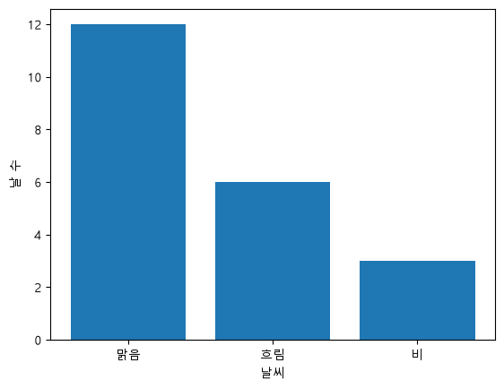
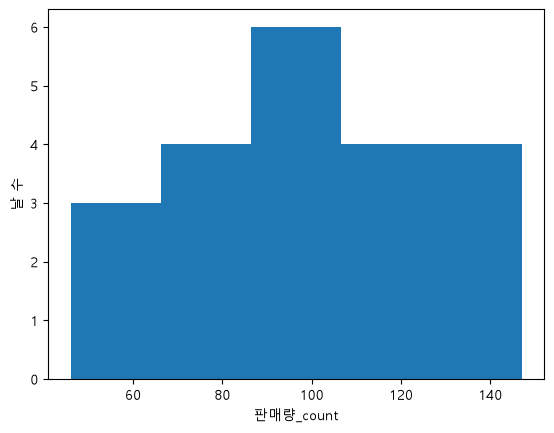
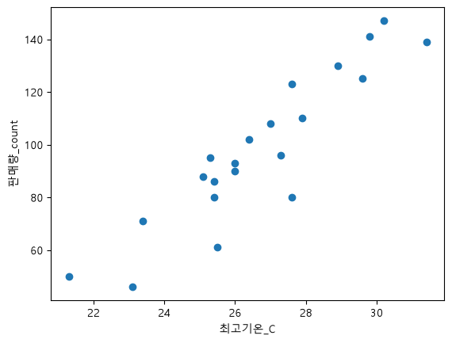
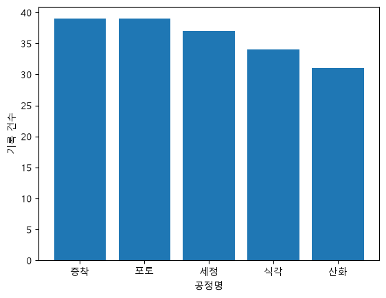
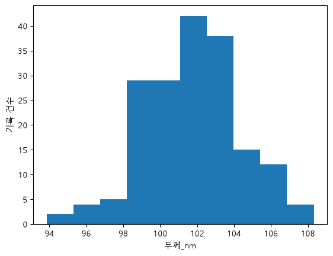
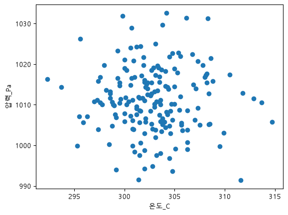
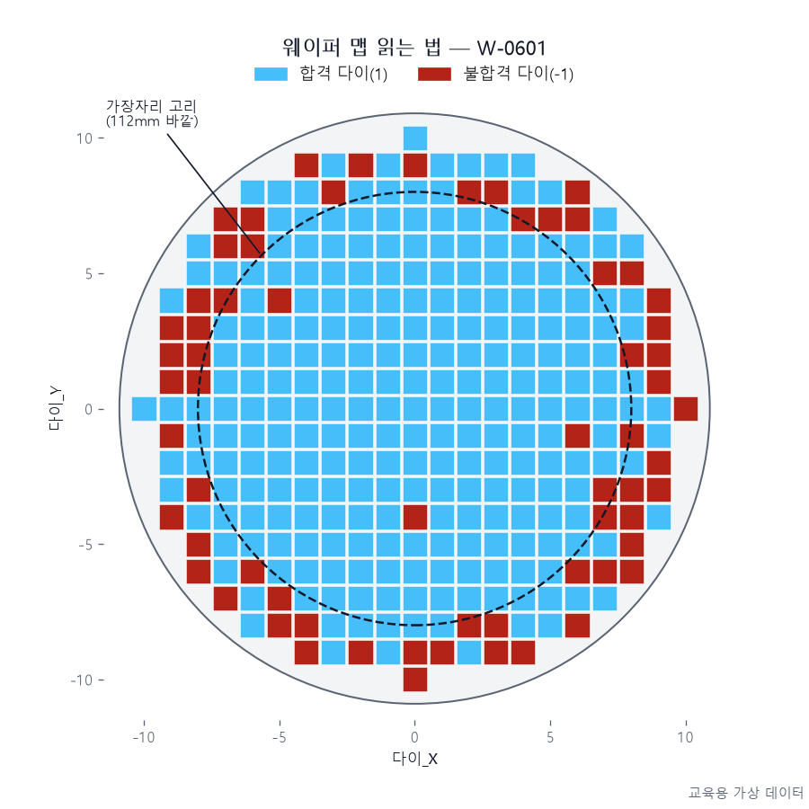
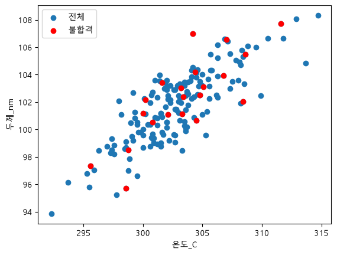

Scatter Plot을 끌어 와 File과 잇고 더블클릭한다.
왼쪽 Axis x가 다이_X, Axis y가 다이_Y, Color가 합격여부인지 확인한다(이 표에서는 처음부터 이렇게 잡힌다). 창이 납작하면 창 모서리를 끌어 정사각형에 가깝게 키운다.오늘의 질문: "숫자 표로는 안 보이던 공정의 모습을, 그래프 몇 장으로 볼 수 있을까?"
오늘의 미션 — 입사 여섯째 날, 다음 회의에서 쓸 그래프 3장을 만들자: 설비별 건수, 온도 분포, 온도와 두께의 관계. (신입 데이터 담당자의 10일 이야기와 공장·데이터는 모두 교육용 가상이다.)

plt.show()"의 4줄 틀로 세 그래프를 그릴 수 있다.선수 지식: 5차시 — 정리와 describe() / 4차시 — read_csv, 열 고르기, 조건 검색 / 1차시 — Orange Distributions
숫자 표는 한 줄씩 읽어야 하지만, 그래프는 전체 모양을 한 번에 보여 준다. 오늘 Orange에서 여는 웨이퍼 검사 기록은 317줄이다. 표를 위에서부터 읽어서는 불합격 다이가 웨이퍼의 어디에 몰렸는지 알 수 없다. 점으로 찍으면 한눈에 보인다.
students.dropna()만 실행하고 print(students.shape)를 하면 행 수가 줄어 있을까?(15, 5) 그대로). students = students.dropna()처럼 다시 저장해야 한다. 오늘도 counts = …처럼 결과를 변수에 담아 두고 그래프에 쓴다.온도_C의 Missing 칸에 3이 보였다. 무슨 뜻일까?개념은 아이스크림 가게 기록(week06_easy_icecream_daily.csv, 21행 5열, 생활 예제용 가상 데이터)으로 익힌다. 한 행 = 하루치 기록이다.
| 열 | 뜻 |
|---|---|
날짜, 요일 | 기록한 날과 요일(3주, 21일) |
날씨 | 맑음·흐림·비 |
최고기온_C | 그날 가장 더웠을 때의 기온. _C = 섭씨 도(℃) |
판매량_count | 그날 판 아이스크림 개수. _count = 센 수(개) |
그래프는 matplotlib(맷플롯립, 파이썬의 그림 그리는 도구)로 그린다. pandas를 pd라고 줄여 부르듯, 그림 도구는 plt라고 줄여 부른다.
첫 셀의 plt.rcParams[…] 두 줄은 그래프의 한글과 마이너스 기호가 깨지지 않게 하는 설정이다(Windows 기준). 노트북을 열 때마다 한 번 실행한다.
import pandas as pd
import matplotlib.pyplot as plt
plt.rcParams["font.family"] = "Malgun Gothic"
plt.rcParams["axes.unicode_minus"] = False
ice = pd.read_csv("week06_easy_icecream_daily.csv", encoding="utf-8-sig")
ice.head()날짜 요일 날씨 최고기온_C 판매량_count 0 2024-06-03 월 맑음 23.4 71 1 2024-06-04 화 흐림 26.4 102 2 2024-06-05 수 맑음 21.3 50 3 2024-06-06 목 맑음 25.1 88 4 2024-06-07 금 흐림 25.3 95
오늘 그리는 그래프는 모두 같은 4줄 틀이다. 바뀌는 것은 첫 줄의 그리기 함수와 열 이름뿐이다.
| 줄 | 하는 일 | 예 |
|---|---|---|
| ① 그리기 | 어떤 그래프를, 어떤 값으로 그릴지 | plt.bar(…), plt.hist(…), plt.scatter(…) |
| ② x축 이름 | 가로축에 이름표 달기 | plt.xlabel("날씨") |
| ③ y축 이름 | 세로축에 이름표 달기 | plt.ylabel("날 수") |
| ④ 보여 주기 | 다 그린 그림을 화면에 내보내기 | plt.show() |
그래프를 고르는 기준은 질문이다.
| 이런 질문이면 | 이 그래프 | 그리기 함수 |
|---|---|---|
| 무리(날씨·설비)마다 몇 개인가? | 막대그래프 | plt.bar |
| 숫자 하나가 어느 구간에 몰려 있나? | 히스토그램 | plt.hist |
| 숫자 두 개가 함께 움직이나? | 산점도 | plt.scatter |
막대를 그리려면 먼저 개수를 세야 한다. value_counts()는 한 열에서 값마다 몇 번 나왔는지 세어 많은 순으로 보여 준다.
센 결과를 counts에 담고, plt.bar(이름들, 개수들)로 그린다. counts.index는 센 결과의 이름표 칸(맑음·흐림·비), counts는 개수다. 막대는 많은 순으로 놓인다.
counts = ice["날씨"].value_counts()
print(counts)
plt.bar(counts.index, counts)
plt.xlabel("날씨")
plt.ylabel("날 수")
plt.show()날씨 맑음 12 흐림 6 비 3 Name: count, dtype: int64

노트북 2단계 실행 결과 — 날씨별 날 수(생활 예제용 가상 데이터)
날씨는 센 열의 이름, 마지막 줄 Name: count, dtype: int64는 "개수를 센 정수 열"이라는 표시다.day_counts = ice[____].value_counts() 빈칸에 세는 열 이름을 따옴표와 함께 넣는다. 나머지 세 줄은 위 코드와 같은 4줄 틀이다.
ice["요일"]. 월~일 막대 7개가 모두 높이 3이다 — 3주 기록이라 요일마다 3일씩 있다. 막대 높이가 같으면 "무리마다 개수가 같다"고 읽는다.검색어 막대그래프 히스토그램 차이
데이터 분석을 처음 배우는 사람에게 막대그래프와 히스토그램의 차이를 아이스크림 가게 기록(날씨별 날 수, 하루 판매량) 예시로 3문장 안에 설명해줘. 둘 다 막대처럼 생겼는데 무엇이 다른지 알려줘.히스토그램은 숫자 열 하나를 몇 개의 구간으로 나눠, 구간마다 몇 개가 있는지 막대로 보여 준다. bins는 구간 수다. 이번에는 개수를 따로 세지 않는다 — plt.hist가 구간을 나누고 세는 일까지 한다.
plt.hist(ice["판매량_count"], bins=5)
plt.xlabel("판매량_count")
plt.ylabel("날 수")
plt.show()
노트북 3단계 실행 결과 — 하루 판매량 히스토그램, 구간 5개(생활 예제용 가상 데이터)
판매량 46~147개를 다섯 구간으로 나눴다. 가운데 구간(약 86~107개)이 6일로 가장 높다. 평균 하나만으로는 "얼마나 고르게 팔렸나"를 알 수 없지만, 히스토그램은 값이 몰린 곳과 퍼진 정도를 보여 준다.
plt.hist(ice["판매량_count"], bins=____) 빈칸에 10을 넣어 구간을 열 개로 나눠 다시 그려 보자. 구간을 잘게 나누면 그림이 어떻게 달라질까?
bins=5가 모양을 읽기 쉽다.산점도는 숫자 열 두 개를 x(가로)와 y(세로)로 놓고, 행마다 점 하나를 찍는다. 21일이면 점 21개다. plt.scatter(x에 놓을 열, y에 놓을 열) 순서다.
plt.scatter(ice["최고기온_C"], ice["판매량_count"])
plt.xlabel("최고기온_C")
plt.ylabel("판매량_count")
plt.show()
노트북 4단계 실행 결과 — 최고기온과 판매량(생활 예제용 가상 데이터)
점들이 왼쪽 아래에서 오른쪽 위로 올라간다 → 더운 날일수록 많이 팔린 경향이다. 점이 한쪽으로 기울지 않고 흩어져 있으면 "함께 움직이는 모습이 안 보인다"고 읽는다. 함께 움직인다고 해서 한쪽이 다른 쪽을 일으켰다고 바로 말하지는 않는다(8차시에서 자세히 다룬다).
공정 기록 week06_process_visualization.csv(180행 10열, 교육용 가상 데이터)를 같은 4줄 틀로 그린다. 한 행 = 공정 작업 1건의 기록이다.
위 코드에서 표 이름이 ice → df로, 열 이름만 바뀐다.
공정 지도 위치: ② 산화 ~ ⑤ 증착/이온주입 + 세정 — 이 단계 설비들의 기록이다. 두께_nm은 작업 뒤 잰 웨이퍼 위 막의 두께라는 설정이다(공정명과 상관없이 모든 기록에 같은 열로 남긴 교육용 가상 값. 막은 주로 ② 산화·⑤ 증착으로 생긴다). 공정 지도 그림은 PART 2에서 다시 본다.
| 열 | 공장에서의 뜻 |
|---|---|
측정시간, 로트번호, 설비번호, 공정명 | 언제, 어느 웨이퍼 묶음을, 어느 기계(EQ-01~EQ-04)에서, 어떤 작업(산화·포토·식각·증착·세정)으로. 설비 4대가 여러 공정 기록을 함께 남겼다(교육용 가상 기록) |
온도_C | 설비 안 작업 공간(챔버)의 온도. _C = 섭씨 도(℃) |
압력_Pa | 챔버 압력(파스칼). 교육용 값이라 절대값은 해석하지 않는다 |
두께_nm | 작업 뒤 잰 웨이퍼 위 막의 두께. nm(나노미터)는 10억분의 1m |
진동_mm_s, 처리시간_sec | 설비가 흔들리는 세기(1초에 몇 mm), 작업에 걸린 초. 오늘은 그리지 않는다 |
합격여부 | 검사 결과. 1 = 합격, -1 = 불합격 |
값과 범위는 학습용이라 실제 공정 조건으로 해석하지 않는다.
df = pd.read_csv("week06_process_visualization.csv", encoding="utf-8-sig")
print(df.shape)
process_counts = df["공정명"].value_counts()
plt.bar(process_counts.index, process_counts)
plt.xlabel("공정명")
plt.ylabel("기록 건수")
plt.show()(180, 10)

노트북 5단계 실행 결과 — 공정명별 기록 건수(교육용 가상 데이터)
공장 말로 읽기 — 다섯 공정의 기록이 31~39건으로 비슷하게 섞여 있다(증착 39 · 포토 39 · 세정 37 · 식각 34 · 산화 31). 가게 기록의 "날씨별 날 수"와 같은 모양이다.
plt.hist(df["두께_nm"], bins=10)
plt.xlabel("두께_nm")
plt.ylabel("기록 건수")
plt.show()
노트북 5단계 실행 결과 — 막 두께 히스토그램, 구간 10개(교육용 가상 데이터)
공장 말로 읽기 — 두께는 약 94~108nm 사이에 있고, 가장 높은 막대는 약 101~103nm 근처다. 가운데가 높고 양쪽으로 갈수록 낮아지는 산 모양이다. 가운데에서 먼 양 끝의 기록은 "평소보다 얇거나 두꺼운 막"이라 눈여겨볼 대상이다.
검색어 반도체 박막 두께 중요한 이유
반도체를 처음 배우는 사람에게, 웨이퍼 위에 쌓는 얇은 막(박막)의 두께를 왜 계속 재고 관리하는지 3문장으로 설명해줘. 두께가 너무 얇거나 두꺼우면 어떤 일이 생길 수 있는지도 알려줘.plt.scatter(df["온도_C"], df["압력_Pa"])
plt.xlabel("온도_C")
plt.ylabel("압력_Pa")
plt.show()
노트북 5단계 실행 결과 — 온도와 압력(교육용 가상 데이터)
공장 말로 읽기 — 점 180개가 한쪽으로 기울지 않은 구름처럼 흩어져 있다. 이 기록에서는 온도가 높은 작업이라고 압력도 높거나 낮은 모습이 안 보인다. 가게 기록의 "오른쪽 위로 올라가는 점들"과 비교해 보자. 온도와 두께는 어떤 모양일지 PART 3 실습지 문제 3에서 직접 그린다.
PART 1에서는 코드로 그래프를 그렸다. Orange에서는 위젯을 이어 같은 그래프를 그리고, 파이썬으로 그리지 않은 두 가지 — 웨이퍼 맵과 상자 그림 — 을 본다. 오늘 새 위젯은 Scatter Plot과 Box Plot 두 개다.
| 위젯(화면 이름) | 어느 묶음에 있나 | 한국어 뜻 | 오늘 하는 일 |
|---|---|---|---|
Scatter Plot | Visualize | 산점도 | 오늘 새 위젯. 두 숫자 열을 x·y로 놓고 점을 찍는다. 점 색을 다른 열로 칠할 수 있다. 파이썬 plt.scatter와 같은 일 |
Box Plot | Visualize | 상자 그림 | 오늘 새 위젯. 숫자 열 하나가 무리마다 어디에, 얼마나 넓게 퍼져 있는지 상자로 보여 준다 |
ANOVA·Student's t 줄, 상자를 가로지르는 회색 세로선, 양옆으로 뻗은 점선은 오늘 읽지 않는다.검색어 상자그림 읽는 법
통계를 처음 배우는 사람에게 상자 그림(box plot) 읽는 법을 반 학생 시험 점수 예시로 설명해줘. 상자의 양 끝, 가운데 선, 상자의 길이가 각각 무엇을 뜻하는지 한 줄씩 알려줘.
1차시에 본 공정 지도(교육용 단순화, 가상 데이터로 그린 그림). ②~⑥은 층을 쌓을 때마다 여러 번 되풀이한다.
week06_orange_wafer_map.csv — 공정 지도 위치: ⑦ EDS(전기 검사). 회로를 다 만든 웨이퍼를 자르기 전에 다이(칩이 될 작은 네모)를 하나씩 전기로 검사한 결과다.week06_process_visualization.csv — 공정 지도 위치: ②~⑤ + 세정 설비 기록(PART 1에서 그린 그 기록). 두께_nm은 작업 뒤 잰 웨이퍼 위 막의 두께라는 설정이다.1차시 그림에서 웨이퍼 한 장 위에 다이 317개가 바둑판처럼 놓인 모습을 봤다(교육용 가상 격자다. 실제 다이 수는 칩 크기에 따라 다르다). ⑦ EDS 단계에서는 다이 하나하나에 전기를 흘려 합격·불합격을 가린다. 그 결과를 다이 위치대로 점을 찍어 색칠한 지도가 웨이퍼 맵이다.
week06_orange_wafer_map.csv(317행 5열, 교육용 가상 데이터)는 웨이퍼 W-0601 한 장의 다이 317개 검사 결과다. 한 행 = 다이 1개다.
| 열 | 뜻 |
|---|---|
웨이퍼ID | 웨이퍼 번호(전부 W-0601). Orange에서는 표에만 보이는 참고용 열 |
다이_X, 다이_Y | 다이의 가로·세로 칸 번호(-10~10, 웨이퍼 가운데가 0). 한 칸 = 14mm로 가정했다 |
중심거리_mm | 웨이퍼 가운데에서 그 다이까지 거리. _mm = 밀리미터(칸 거리 × 14, 0~140). 이 웨이퍼는 지름 300mm(반지름 150mm)라는 설정이다 |
합격여부 | 다이 전기 검사 결과. 1 = 합격, -1 = 불합격 |
표에는 숫자 다이_X, 다이_Y만 있다. 이 두 열을 산점도의 x·y로 놓으면 어떤 그림이 될까? Orange에서 직접 그려 보자.
검색어 웨이퍼 맵 이란
반도체를 처음 배우는 사람에게 '웨이퍼 맵(wafer map)'이 무엇인지 3문장으로 설명해줘. 불량 다이가 웨이퍼 가장자리에 몰려 있으면 어떤 단서가 되는지도 단정하지 말고 알려줘.week06_1_wafermap_start.ows를 연다.week06_1_wafermap_done.ows(완성본)를 연다.
Scatter Plot을 끌어 와 File과 잇고 더블클릭한다.
왼쪽 Axis x가 다이_X, Axis y가 다이_Y, Color가 합격여부인지 확인한다(이 표에서는 처음부터 이렇게 잡힌다). 창이 납작하면 창 모서리를 끌어 정사각형에 가깝게 키운다.무엇이 보이나? 점 317개의 모양, 그리고 빨간 점(-1, 불합격)이 어디에 있는지 말로 해 본 뒤 열어 보자.


웨이퍼 맵 읽는 법 — 네모 하나 = 다이 하나, 빨강 = 불합격, 하늘색 = 합격(Orange 화면과 같은 색). 점선 고리는 가장자리(112mm 바깥)를 나눈 선이다(교육용 가상 데이터).
Box Plot을 File에 잇고 더블클릭한다.
처음에는 Variable이 다이_X로 잡혀 있다. Variable 목록에서 중심거리_mm를 클릭하고, Subgroups가 합격여부인지 확인한다.
읽을 것 — 합격(1) 상자는 62.6~112.0mm, 중앙값 88.5mm다. 불합격(-1) 상자는 119.2~132.8mm, 중앙값 126.8mm로 오른쪽(가운데에서 먼 쪽)에 있다. 산점도에서 눈으로 본 "가장자리에 몰렸다"를 숫자로 확인한 것이다.
Distributions를 File에 잇고 Variable 목록에서 중심거리_mm를 클릭한다. Split by는 합격여부 그대로 둔다.
불합격 색 막대가 오른쪽(먼 거리) 구간에 몰려 있는지 본다.
File → Open으로 week06_2_process_start.ows를 연다. PART 1의 공정 기록(180행)이 File에 들어 있다.
Distributions를 잇는다. Variable 목록에서 온도_C를 클릭하고, 왼쪽 아래 Split by를 None으로 바꾼다(처음에는 합격여부로 잡혀 막대 색이 나뉜다).
파이썬 plt.hist와 같은 질문 — "온도가 어디에 몰렸나" — 에 답하는 그림이다.
Scatter Plot을 잇는다. 이 표에서는 처음에 Axis x가 설비번호, Axis y가 공정명으로 잡혀 바둑판 모양 점이 나온다. 당황하지 말고
Axis x를 온도_C, Axis y를 두께_nm로 바꾼다. Color는 합격여부 그대로 둔다. 강사는 축 설정까지만 보여 주고 창을 닫는다 — 점 모양은 실습지 문제 3에서 파이썬으로 먼저 그려 본다.plt.scatter로 그린 문제 3 그림과 같은 모양이다. Orange는 Color 칸 하나로 합격·불합격 색까지 함께 칠한다.

Box Plot을 잇고 Variable을 온도_C, Subgroups를 설비번호로 바꾼다(처음에는 측정시간·합격여부로 잡혀 있다).
상자 네 개 중 어느 설비 상자가 가장 긴지 읽는 것이 실습지 문제 4다.| 질문 | 파이썬(PART 1·실습지) | Orange(오늘 PART 2) |
|---|---|---|
| 무리마다 몇 개? | value_counts() + plt.bar | Distributions(글자 열) |
| 어디에 몰렸나? | plt.hist | Distributions(숫자 열, Split by None) |
| 함께 움직이나? | plt.scatter | Scatter Plot(점 색까지 한 번에) |
| 무리마다 얼마나 퍼졌나? | 오늘은 그리지 않는다 | Box Plot |
한 문장으로 — 파이썬 plt.scatter와 Orange Scatter Plot은 같은 표에서 같은 모양의 그림을 그린다. 파이썬으로 그리지 않은 상자 그림으로는 설비마다 온도가 얼마나 들쭉날쭉한지 비교할 수 있다.
6차시 실습지를 열고 순서대로 푼다. 문제 1~3이 오늘의 미션 그래프 3장이다.
____를 채운다. 설비별 기록 건수 막대, 온도 히스토그램, 온도-두께 산점도를 그린다.week06_2_process_start.ows에서 Box Plot을 이어, 온도 상자가 가장 긴 설비를 찾는다.다 풀면 실습지의 "정답 보기"로 확인하고, 문제 5의 문장을 옆 사람에게 읽어 준다.
plt.hist(df["두께_nm"], bins=10) → 약 101~103nm 근처에 가장 많다week06_easy_icecream_daily.csv — 21행 5열, 생활 예제용 가상 데이터(PART 1 개념). 날씨별 날 수 맑음 12 · 흐림 6 · 비 3.week06_orange_wafer_map.csv — 317행 5열, 교육용 가상 데이터(PART 2 워밍업, Orange는 orange/ 폴더의 .tab을 연다).
다이 317개 중 불합격 64개. 공정 지도 위치: ⑦ EDS(전기 검사) 결과.week06_process_visualization.csv — 180행 10열, 교육용 가상 데이터(PART 1·2·3). 설비 4대(EQ-01~EQ-04)가 여러 공정 기록을 함께 남겼다(교육용 가상 기록).
공정 지도 위치: ②~⑤ + 세정 설비 기록(두께_nm은 작업 뒤 잰 웨이퍼 위 막의 두께라는 설정).plt.rcParams[…] 두 줄을 실행하지 않으면 축 이름의 한글이 네모로 보이고,
Glyph 44032 (\N{HANGUL SYLLABLE GA}) missing from font(s) DejaVu Sans. 같은 경고가 뜬다. 첫 셀을 실행한 뒤 그래프 셀을 다시 실행한다.
plt.bar(df["설비번호"])처럼 열을 바로 넣으면 TypeError: bar() missing 1 required positional argument: 'height'가 난다.
막대에는 이름과 높이(개수) 두 가지가 필요하다. value_counts()로 먼저 세고 plt.bar(이름들, 개수들)로 그린다.
Text(0, 0.5, '기록 건수') 같은 글자 줄이 함께 나온다. 마지막 줄 plt.ylabel(…)의 결과가 찍힌 것이다. 4줄 틀의 마지막 plt.show()를 붙인다.
____를 채우지 않으면 AttributeError: module 'matplotlib.pyplot' has no attribute '____'(그리기 함수 이름 자리)나
AttributeError: 'Series' object has no attribute '____'(Series = 표의 열 하나), NameError: name '____' is not defined(열 이름 자리)가 난다. 빈칸을 아직 안 채웠다는 뜻이다. 열 이름은 따옴표 안에 쓴다 — df[온도_C]처럼 따옴표를 빠뜨리면 NameError: name '온도_C' is not defined가 난다.
x와 y 열을 바꿔 넣으면 오류 없이 축 이름과 내용이 어긋난 그림이 나온다 — plt.scatter(x, y) 순서와 xlabel·ylabel을 함께 확인한다.
plt.show()" 4줄 틀이다. 막대만 그 앞에 value_counts() 한 줄이 붙는다.복습 문제 전체는 quiz.json(수업 후 자율 복습)에 있다. 아래는 그중 일부다.
다이_X, y를 다이_Y, 색을 합격여부로 놓았다. 무엇을 알 수 있을까?ChatGPT에 아래처럼 물어 받은 코드의 예시다. 4차시 조건 검색으로 불합격 행만 고른 뒤, 같은 산점도 위에 빨간 점으로 한 번 더 찍는다. 노트북 7단계에서 실행한다.
pandas 표 df에 "온도_C", "두께_nm", "합격여부"(1 = 합격, -1 = 불합격) 열이 있어. 온도-두께 산점도를 그리는데 불합격 점만 빨간색으로 겹쳐 그리는 짧은 matplotlib 코드를 만들어 줘.fail = df[df["합격여부"] == -1]
plt.scatter(df["온도_C"], df["두께_nm"], label="전체")
plt.scatter(fail["온도_C"], fail["두께_nm"], color="red", label="불합격")
plt.xlabel("온도_C")
plt.ylabel("두께_nm")
plt.legend()
plt.show()
노트북 7단계 실행 결과 — 전체 180건 위에 불합격 21건을 빨간 점으로 겹침(교육용 가상 데이터)
color="red"는 점 색, label과 plt.legend()는 그림 구석의 이름표(범례)다. 처음 보는 옵션이라 구경만 한다.진동_mm_s 열의 히스토그램(bins=10)을 그리고, 값이 가장 많이 몰린 구간을 한 문장으로 적는다. x축 이름도 "진동_mm_s"로 바꾼다.
7차시에는 오늘 그래프로 본 "설비마다 다르다", "웨이퍼마다 불량 위치가 다르다"를 숫자로 묶어 비교한다. 설비별 수율(검사한 것 중 합격한 것의 비율)을 계산하고, Orange에서는 웨이퍼 12장의 맵을 설비별로 나란히 본다.
다음 미션 — 어느 설비의 수율이 가장 낮은지, 가장 많은 불량 유형은 무엇인지 보고하자.